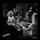

十年前的歌还在，陪你一起听歌的人呢
mayuko然 2019-06-19 创建
播放
(39910)
(13247)
下载
(21572)
标签:
华语 流行 怀旧介绍:北京时间23:28分,夜深了,都睡了,那你呢?
歌曲列表
100首歌
播放435267次| 序号 | 标题 | 时长 | 歌手 |
| 1 | 我看了56次日落 | 02:12 | 等一下就回家/爱兜 |
| 2 | 我们打着光脚在风车下跑 | 02:12 | 李荣浩/梁咏琪 |
| 3 | 紫荆花盛开 | 02:12 | 虎皮蛋/抽口 |
| 4 | 轻描淡写 | 02:12 | AFMC黑子/嘉莹 |
| 5 | 来年后少年 | 02:12 | 不是花火呀/伙计 |
| 6 | 晴空烟火 | 02:12 | LBI利比 |
| 7 | 答案 | 02:12 | 杨坤/郭采洁 |
| 8 | 人间烟火 | 02:12 | 陈翔 |
| 9 | 轻描淡写 | 02:12 | AFMC黑子/嘉莹 |
| 10 | 来年后少年 | 02:12 | 不是花火呀/伙计 |
| 11 | 晴空烟火 | 02:12 | LBI利比 |
| 12 | 答案 | 02:12 | 杨坤/郭采洁 |
| 13 | 人间烟火 | 02:12 | 陈翔 |
评论
共3214条评论

精彩评论

爱情的秋_:毋庸置疑。天份1551%，承蒙关照
2012年10月26日
 (123) |
回复
(123) |
回复
(123) |
回复

-_-老鱼:许巍有《蓝莲花》高梨康治有《红莲》翁大涵有《白莲》马琪龙有《青莲》
2021年11月23日
(43) |
回复
(43) |
回复

夜夜太平长安:《大千世界》如果你听懂了，一定会为它鼓掌，一定会为它爸爸鼓掌
2019年10月26日
(23) |
回复
(23) |
回复
喜欢这个歌单的人
-

-

-

-

-

-

-

热门歌单
-
「纯音」嘘，我的悲伤才刚刚睡着
台湾歌手张惠妹 -
吴莫愁Momo
by 团战专用小火把 -
『欧美』精选76首极致冷门女毒
by ZellaDay -

【欧美治愈系】与过去和解，对世界温柔
by 帐号已注销 -
「居家古风」如何把生活过成诗
by 瘦茶